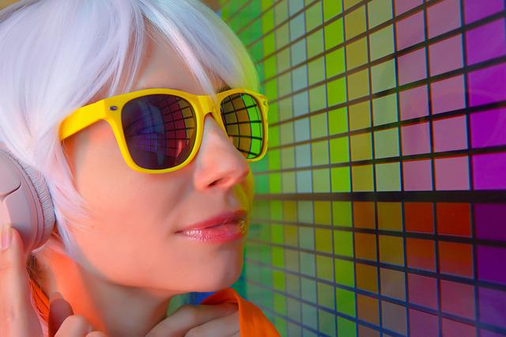

Women in the Electronic music industry
It seems like female artists are (finally) starting to get the recognition they deserve. I am so happy that I can write my own site and share their music
Here is a list of my favorite Female artists
1.Peggy Gou-Peggy Gou is a South Korean DJ and record producer based in Germany. She has released seven EPs on record labels, including Ninja Tune and Phonica. In 2019, she launched her own independent record label, Gudu Records, and released a DJ-Kicks compilation, DJ-Kicks: Peggy Gou, on !k7 Records.

2.Octo Octa-Maya Bouldry-Morrison, better known by her stage name Octo Octa, is an American house producer and DJ based in Brooklyn, New York. In 2016, Bouldry-Morrison came out as transgender, after having already gained prominence as an artist.

3.Maya Jane Coles-Maya Jane Coles is a music producer, audio engineer and DJ based in the United Kingdom, born in London of British and Japanese descent. Throughout her career, she has crafted intricate, personality-driven tech-house tracks in addition to dubstep and garage (primarily as Nocturnal Sunshine).

4.Jayda G-Jayda Guy, known professionally as Jayda G, is a Canadian house music producer and DJ. She was nominated at the 63rd Annual Grammy Awards in the best electronic dance recording category for her song "Both of Us", and later remixed Dua Lipa's "Cool" for the album Club Future Nostalgia.